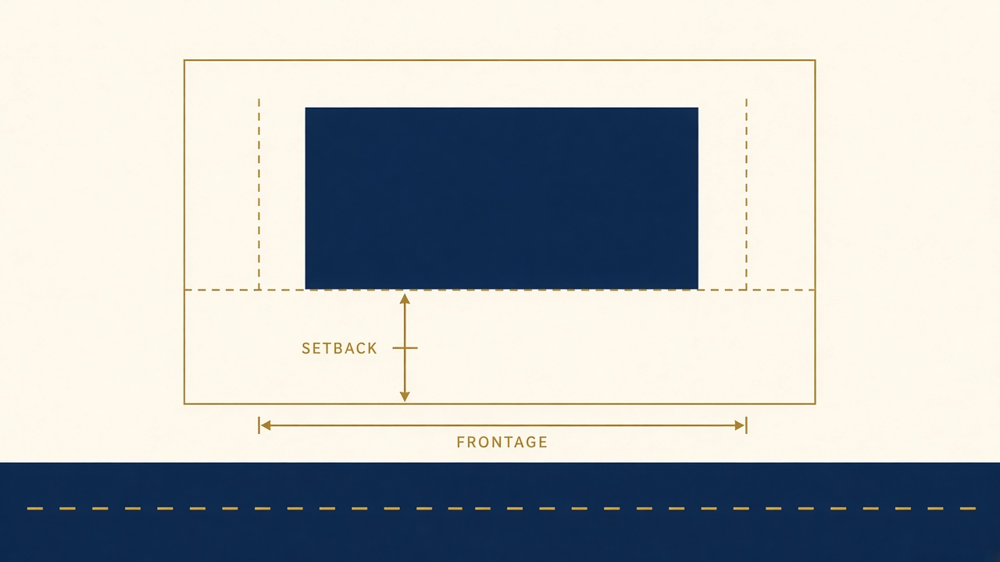
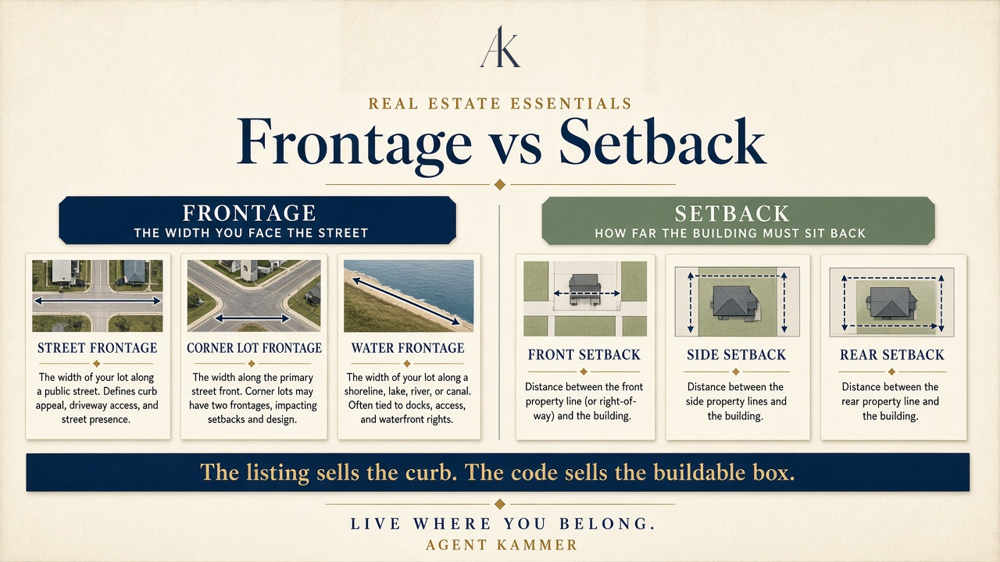

Agent Kammer
Agent Kammer
Live where you belong
Agent Kammer

One number is how wide you face the street. The other is how far the building must sit back.

Frontage is the linear measure of the lot along the street (or water). Corner lots can have more than one. Listings lead with it because it is the curb story.
Setbacks are the required distances from established lines within which you may not build. Front, side, and rear. They shrink the buildable box on the same lot.
The listing sells the curb. The code sells the buildable box. Ask for both numbers before you fall in love with the facade
Educational only — not legal, zoning, or architectural advice. Confirm with the survey, zoning map, and counsel. Back to your decision
Setbacks: “The distance from the curb or other established line, within which no buildings may be erected.” — Agent Kammer study glossary.
Frontage is the lot’s measure along the street (or other fronting line). It is not the same as the setback. Wide frontage with a deep front setback can still leave a thin buildable depth.